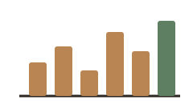

Особистий читацький щоденник
Усе про мої книги — на одній сторінці
Каталог прочитаного, поточна книга, статистика за рік і калькулятор, який підкаже, скільки часу потрібно на наступну книгу.
Каталог
Книги, які я вже прочитав, з оцінкою та коротким враженням.
- Іван Багряний — «Тигролови»★★★★★
- Сергій Жадан — «Інтернат»★★★★★
- Роберт Мартін — «Чистий код»★★★★☆
Читаю зараз
Мартін Фаулер — «Рефакторинг»
Прогрес186 з 448 с.
Зараз — розділ про виділення функцій. Нотатки веду прямо в книзі олівцем.
Мої нотатки
Статистика
- Книг за рік
- 14
- Сторінок
- 4 870
- Середня оцінка
- 4,6
- Улюблений жанр
- Проза
Час читання
Скільки часу займе книга при моїй швидкості читання?
Розрахунок буде реалізовано на JavaScript у лабораторній роботі №3.